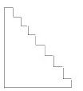
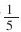
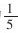

浅谈开放题的设计 [1]
修订后的小学数学教学大纲对小学生学习数学已确立了这样的理念：每一个学生都可以学习数学；不同的学生学习不同水平的数学；允许学生以不同的速度学习数学；学生可以用自己的办法学习数学。这就为学生自主学习与探索拓宽了空间。为此，大纲中明确指出：“教师要充分发挥创造性，依据学生的年龄特征和认知水平，设计探索性和开放性的问题，给学生提供自主探索的机会。让学生在观察、操作、讨论、交流、猜测、归纳、分析和整理的过程中，理解数学问题的提出、数学概念的形成和数学结论的获得，以及数学知识的应用。通过这样的教学活动，逐步培养学生的创新意识，形成初步的探索和解决问题的能力。”可见，设计一些开放题是非常必要的。
开放题，就是指一些条件不全、问题缺少、答案不惟一或解题依据不足，要求解题者自主探索，独立解决的数学问题。由于这类问题能激发学生强烈的求知欲望与探索热情，利于培养学生的创新意识，现在一些有超前意识的教师已着手进行这方面的研究与尝试。一方面暂缓当前教材的滞后问题，另一方面又给学生提供了自主探索的机会，让学生按新的理念学习数学。
开放题的设计，一般有这样几种：
1.结果开放。如8-（）=（）+2，6+（）=6×（）；把50分成两个偶数的和；用一根12分米长的铁丝，可以围成多少个不同的长方形？以上各题答案不唯一，同一个问题可以有不同的结果。学生可根据自己的实际，能解出几个结果，教师都应给予认可。（当然越多越好）这样，学生人人都能参与到学习过程之中，个个学习的潜能都能得到充分发挥。
2.方法开放。如：
（1）用5个3组成一个算式，使算式结果等于2。解题方法有：①3-[（3+3）÷（3+3）]=2；②（3+3-3+3）÷3=2；③3-[（3-3）+（3÷3）]=2；④3-3×3÷3÷3=2；⑤3-[（3×3）÷（3×3）]=2，……
（2）甲乙两数的比是4:5，已知甲数是16，求乙数。其解题方法有：①16÷4×5=20。②16÷45=20。③16÷49×59=20。④16×1 14=20。⑤16÷49-16=20。⑥设乙数为x，则：16x=45，x=20，或者45，x=20，或者16+x=16÷49，x=20。
（3）右图是一个楼梯的侧面，如果要铺上地毯，要计算地毯的长度，你应该怎样测量？（测量方法略）

以上各题，学生可以用不同的方法解决同一问题。由于方法开放，就不局限于一种思维模式，这样可使学生的思维更加灵活、敏捷和深刻。
3.思路开放，即学生解决问题时可运用不同的思路。
（1）分析思路开放。如：分析复合应用题时，可用“分析法”，也可用“综合法”；分析一些特殊类型的问题时，可灵活选用“逆推法”“画图法”“列表法”“假设法”“比较法”“转化法”等。
（2）思维训练开放。思考者可从各种设想出发，不拘一格，尽可能地做出多种训练。训练方式一般是：①一题多变的训练。对题中条件、问题、情节作各种变化，让学生在各种变化了的情境中，从各种不同角度进行思考。（a）改变条件。如，甲乙两辆汽车同时从两地相向而行，甲车每小时行60千米，乙车每小时行80千米，6小时相遇，全程共有多少千米？改变条件后是：6小时后相距100千米，全程共有多少千米？6小时后，共行了这段路的

，全程共有多少千米？6小时后，两车还相距全程的
，全程共有多少千米？（b）改变问题。如：甲乙丙三个工程队合作一项工程，甲单独做10天完成，乙单独做12天完成，丙单独做15天完成。三队合作需要多少天完成？改变问题后是：甲先做3天，剩下的乙丙合作需要多少天？甲乙先合作2天后，丙队加入，还需要多少天完成？甲、乙、丙合作5天后，还剩多少工程？（c）联想训练。加强联想训练有利于发展学生的创新思维。其主要训练形式有：由条件想问题。如教师出示条件：某班男生人数是25，女生人数是20。让学生由此尽可能提出相关问题。由问题想条件。如：要求“两地相距多少千米？”必须要知道哪些条件？启发学生从加、减、乘、除各种运算关系寻求相应的求解条件。原型启发训练。如教学“除数是整数的小数除法”后，练习56.28÷67。教师提问：“现在我们学会了除数是小数除法，你们还想学习什么样的小数除法？”学生自然联想到学习除数是小数的除法。教师将练习题56.28÷67改为56.28÷0.67。教师接着问：“怎样计算这道题？”学生通过此题的演变过程，经教师稍加启发便能想出把除数和被除数扩大相同的倍数，转化为除数是整数的小数除法计算。这样的教学，不仅让学生掌握小数除法的计算方法，而且诱导学生通过这些知识联想到与之有关的新知识，通过联想，激发学生的求知欲，将学生的思维引向深入。（d）自编应用题的训练。学生可自己设置条件，提出问题，自编各种应用题。这种训练有利于培养学生的求异思维。4.实践性题，如：教学百分率的应用时，可设计这样的题：某小学有9名同学利用星期天到公园游玩。售票处写着：票价每张5元，10张以上可8折优惠。他们买门票至少花多少元？
学生思考后得出如下的解法：①5×9=45（元）；②5×10×80%=40（元）；（多买一张票）③5×10×80%-5×80%=36（元）；（多买一张票按8折转卖）④5×10×80%-5=35（元）。（多买一张票按原价转卖）
大家经过讨论认为：解法1思考缺乏全面性、深刻性，解法2浪费一张门票，解法3自己得到实惠的同时他人也得到实惠，解法4具有投机性。显然，解法3最好。
开放题的设计可以将教科书中的一些习题进行改造，如：把4+（）=10，改为（）+（）=10，把“有18只兔子平均关在三个笼子里，每个笼子里关几只？”改为“把18只免子关到一些笼子里，要每笼免子只数相等，可以怎样关？”可以自己设计，也可以潜心钻研教材，挖掘教材中的创新因素，灵活运用。
设计开放题，对教师提出了较高的要求。首先，教师要有创造性，只有这样，才能诱发学生的创新思维。其次要把握好开放题的量度和适度，既要符合学生的年龄特征和认知水平，又要使全体学生能根据自己的不同水平做出回答，要满足多样化学习的需求。最后，开放题设计的内容应当紧密联系学生生活实际，要有趣味且富有挑战性，要使学生切身体会到数学就在身边，感受到数学的趣味和作用，乐意投身于数学学习之中。